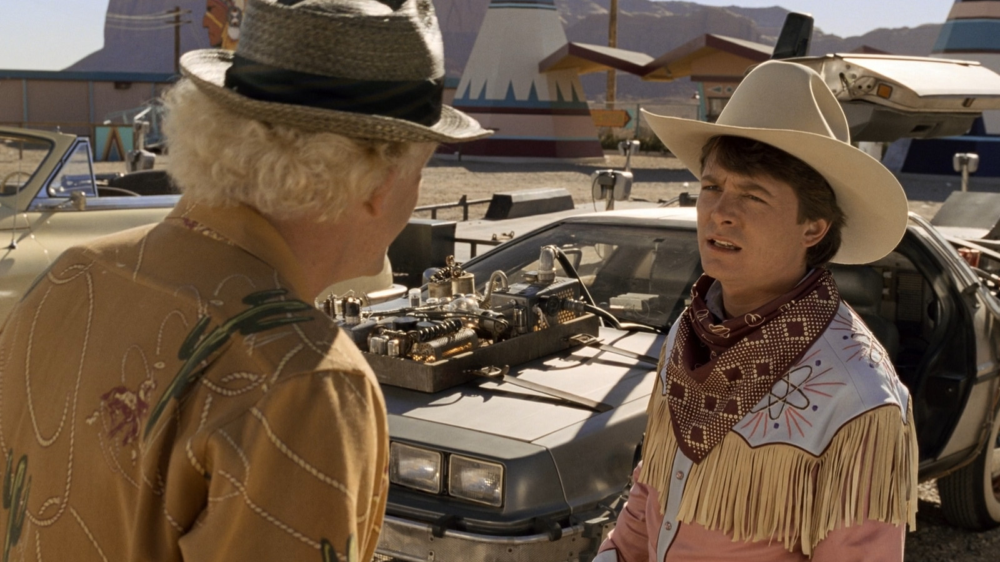
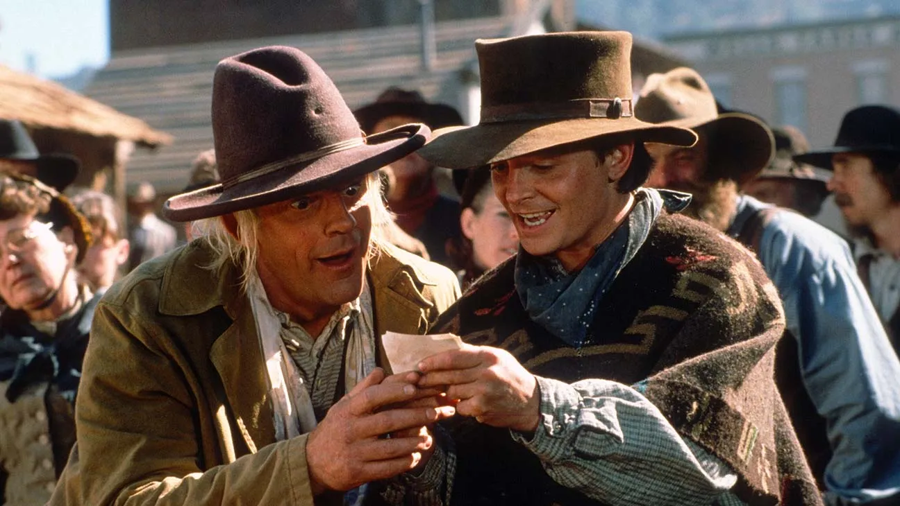

Back to the future
Release: 1985
Marty McFly, a typical American teenager of the Eighties, is accidentally sent back to 1955 in a plutonium-powered DeLorean "time machine" invented by a slightly mad scientist. During his often hysterical, always amazing trip back in time, Marty must make certain his teenage parents-to-be meet and fall in love - so he can get back to the future.

Back to the Future II was groundbreaking, and it still resonates now
Release: 1989
Marty McFly has only just gotten back from the past, when he is once again picked up by Dr. Emmett Brown and sent through time to the future. Marty's job in the future is to pose as his own son to prevent him from being thrown in prison. Unfortunately, things get worse when the future changes the presen

Back to the Future Part III is a return to form for a satisfying conclusion
Release: 1990
Stranded in 1955, Marty McFly learns about the death of Doc Brown in 1885 and must travel back in time to save him. With no fuel readily available for the DeLorean, the two must figure how to escape the Old West before Emmett is murdered.